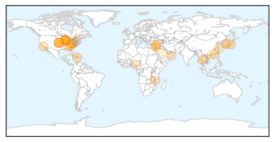
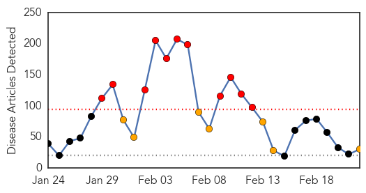
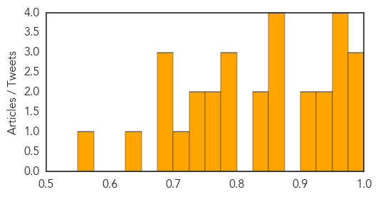

Unknown
30-Day Web Trend
1 alerts, 0 warnings

30-Day Twitter Trend
0 alerts, 0 warnings

Article Locations

Article Confidences

Top Articles:
- 0.968
- Federal health officials detail new 'Bourbon virus'
- 0.937
- First Aids case was in 1908 and was a chimpanzee hunter in south east Cameroon
- 0.917
- Chicago Tribune
- 0.917
- Chicago Tribune
- 0.917
- Chicago Tribune
- 0.917
- Chicago Tribune
- 0.917
- Chicago Tribune
- 0.917
- Chicago Tribune
- 0.916
- Three cases of ‘Superbug’ CRE confirmed at North Carolina hospital
- 0.891
- Who is going to defeat the superbug (because federal policies sure aren't working)?
- 0.859
- Lawsuit Threat Looms Over Superbug-Contaminated Endoscope Maker As UCLA Patient Fights For Survival : LIFE : Tech Times
- 0.836
- New virus Kansas: Tick and insect bites found in new virus killer
- 0.829
- ‘Superbug’ outbreak raises questions about medical scope
- 0.816
- CDC: Man's Death Leads to Discovery of New Virus in Kansas -
- 0.793
- Bourbon Virus Liked To Death Of Kansas Man
- 0.764
- E.coli outbreak linked to Chipotle spreads to 3 more states -
- 0.764
- E.coli outbreak linked to Chipotle spreads to 3 more states -
- 0.744
- US health officials push for stricter ‘superbug’ defence
- 0.701
- the edge of knowledge
- 0.692
- Malawi government lauds ICAP programs successes
- 0.685
- A New Bird Flu Case Reported in China
- 0.639
- One more H7N9 case reported in Guangdong --China Economic Net
- 0.635
- Hospital fails to reconcile with Health Ministry
- 0.610
- Abu Faour adamant on terminating Hotel Dieu contract
- 0.604
- ‘Superbug’ infected spouse at Virginia Mason, widow told over a year later
- 0.594
- ‘Superbug’ infected spouse at Virginia Mason, widow told over a year later
- 0.533
- FG introduces vaccine to curb type-2 polio virus
- 0.524
- WHO Assistant Director General for Health Security Affairs Hails Saudi Efforts in Fighting 'Corona' Virus
- 0.516
- Taiwanese carriers to be fined for labour code violations
- 0.507
- Malaria Concerns in Myanmar and Thailand Rise
- 0.503
- Drug Resistant Strains of Malaria Spread in Southeast Asia
Top Tweets:
- 0.589
- I was wondering if you seen this people. I am interested in MERS/KSA since the Avian Flu epidemic in 2005.
Measles
30-Day Web Trend
11 alerts, 7 warnings

30-Day Twitter Trend
3 alerts, 0 warnings

Article Locations


Article Confidences
Top Articles:
- 0.989
- Monday Medical: measles is very contagious and preventable
- 0.981
- 10th measles case confirmed in Toronto
- 0.976
- Snohomish County has close call with measles-infected visitor
- 0.974
- 19th case of measles
- 0.964
- No measles cases in area
- 0.957
- Local providers urge measles shots - Steubenville, Wintersville, Toronto, Mingo, Weirton, Jefferson County
- 0.951
- States Improve Response to Measles Outbreaks
- 0.949
- Vaccinations are safe and effective
- 0.934
- More measles cases tied to Disneyland, Illinois day care Republican American
- 0.923
- 10th confirmed case of measles in Toronto an adult female
- 0.916
- Toronto health officials report 10th case of measles
- 0.875
- In defence of vaccination
- 0.863
- Amid debate, doctors say it's clear: Immunizations work
- 0.862
- End the religious and philosophical exemptions for vaccines;
- 0.857
- Falling immunisation rates linked to spread of measles
- 0.843
- What to know about measles and vaccinations
- 0.841
- Dana Hills High School
- 0.799
- Adults Not Off the Hook on Measles Outbreak
- 0.780
- Doctors focus on 'vaccine-hesitant,' not 'anti-vaxxers,' to fight outbreaks
- 0.777
- Protect our children and community
- 0.765
- Vaccination reduces chance of virus outbreak
- 0.764
- Health unit can send unvaccinated children home during outbreaks
- 0.742
- Could Milwaukee Have a Measles Outbreak? Urban Milwaukee
- 0.733
- Vaccines are unavoidably political
- 0.703
- UB Reporter: Need to know news and views for UB faculty and staff
- 0.698
- Vaccine opposition ebbs and flows
- 0.692
- Vaccinations are parents' responsibility
- 0.675
- Where does New Hampshire stand on childhood vaccine exemptions?
- 0.632
- Teacher vaccinations latest issue in war on illness in the classroom
- 0.567
- Paul Offit’s Measles Crusade
Top Tweets:
-
No tweets found for Feb 22, 2015